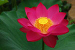
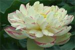

荷花欣赏
红台
叶绿色，表面粗糙；花重瓣，红色，杯状；花瓣36枚左右，花径18- 23厘米；雌蕊发育正常，能结实，花托喇叭形；莲蓬伞形。大花形品种，花大艳丽，适于湖塘栽植和缸栽。荷花一般以粉色、白色居多，而在圆明园第19届荷花节上，重瓣碗状的“绿如意”却为黄绿色，非常罕见。更令人称奇的是 “中山红台”，这是大型重台荷花品种，花瓣几十枚至上百枚，雄蕊极少，心皮全部瓣化，形成花中孕花的奇景。开花时，外瓣层层谢落，内层碎瓣则不断增生，色泽红艳瑰丽，高贵夺目。

古浪小红
叶绿色，表面粗糙；花重瓣，红色，伞状；花瓣80枚左右，花径12-17厘米；雌蕊发育正常，能结实，花 托漏斗形；莲蓬倒圆锥形。中花形品种，开花繁密，适于缸、盆栽植。为了表达对荷花高洁形态的赞赏，以金芙蓉和草芙蓉比喻荷花品性的难得。溪客、静客都是强调荷花的生长环境和安静娴雅的状态。而翠钱则是新荷的雅称，红衣是荷花瓣的别称，宫莲是莲花瓣的美称，佛座须是莲花蕊的别名。

酒锦
叶绿色，表面光滑；花重瓣，乳白红色，花瓣29枚左右，花径9-22厘米；雄蕊极少，部分花雄蕊全部瓣化或呈管状瓣化；雌蕊不结实，花托退化呈管状，心皮基本瓣化，呈绿珠状或苔状；莲篷扁圆形。碗莲品种，花期早，单花期长，开花繁密，花不易盛开，呈球状，适于缸、盆栽植。坚果椭圆形或卵形，长1.8-2.5厘米，果皮革质，坚硬，熟时黑褐色；种子（莲子）卵形或椭圆形，长1.2-1.7厘米，种皮红色或白色。花期6-9月，每日晨开暮闭。果期8-10月。荷花栽培品种很多，依用途不同可分为藕莲、子莲和花莲三大系统。

小舞妃
叶深绿色，表面光滑，质厚了花单瓣，桃红色，基部淡黄色，飞舞状；花瓣33枚左右，花径15-17厘米；雄蕊附属物呈淡黄邑；雌蕊发育正常，能结实，花托杯形：莲篷碗形。中花形品种，花期早，开花繁密，适于缸、盆栽植，亦可作碗莲栽培。
650王超磊